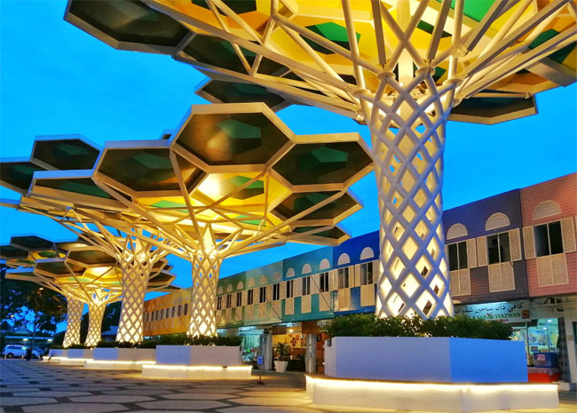

A Kingdom of Wealth and Tranquility
Where Tradition Meets Modern Elegance
Discover a nation where majestic mosques, royal heritage, and lush rainforests coexist in harmony, reflecting the unique character of Southeast Asia's richest kingdom.
A KINGDOM OF LANDMARKS
Iconic Landmarks & Cities
From grand Islamic architecture to modern urban spaces, Brunei’s landmarks reflect a unique blend of tradition and prosperity.
Experience the Abode of Peace in its most majestic form. From the shimmering golden domes of the capital to the historic floating villages, Brunei-Muara is the cultural and spiritual heart of the nation.

Bandar Seri Begawan
The Crown Jewel of the EastThe capital city is a masterclass in balance. Here, quiet, tree-lined boulevards and modern administrative buildings coexist with some of the world's most breathtaking mosques. It is a city that moves at its own pace—peaceful, respectful, and deeply rooted in tradition.
Sultan Omar Ali Saifuddien Mosque
CULTURAL LANDMARKDedicated to Sultan Omar Ali Saifuddien III, this iconic mosque stands as an oasis of tranquility in the heart of Bandar Seri Begawan.

Kampong Ayer
HERITAGE SITEThe world's largest water village, a historic settlement that has thrived for over 1,300 years.

Jame' 'Asr Hassanil Bolkiah Mosque
ROYAL LANDMARKBuilt to commemorate the 25th year of Sultan Hassanal Bolkiah’s reign, this grand mosque reflects Brunei’s prosperity and faith.

Intramuros
The historic Walled City at the core of the capital.
The Serene Heart of the Abode of Peace
Tutong
Experience a mosaic of cultures and the breathtaking tranquility of Brunei’s largest natural lake and pristine coastline.

Tasek Merimbun
ASEAN HERITAGE PARKA blackwater lake shrouded in legend, offering timber walkways that lead to an island in the center of the lake.

Seri Kenangan Beach
The Golden StupaOne of Bagan’s most revered golden pagodas, Shwezigon stands as a lasting symbol of early Burmese Buddhism and royal devotion.
Iconic Landmarks
Belait
Belait's landscape is a unique blend of industrial marvels and tranquil escapes, reflecting a century of prosperity.

Billionth Barrel Monument
Must SeeCommemorating the extraction of the billionth barrel of oil from the Seria field, this monument is a symbol of Brunei's prosperity.

Silver Jubilee Park
Coastal SerenityA peaceful riverside park built to commemorate the Silver Jubilee of Sultan Hassanal Bolkiah’s reign.

Town Center
Heritage meets IndustryA central commercial street lined with traditional shophouses, where the history of Kuala Belait is most vividly preserved. The area is home to retro cafés (kopitiams) and locally rooted shops, offering a tangible sense of community life and cultural heritage.
A Tale of Two Cities
From the bustling administrative hub of KB to the historic energy birthplace of Seria.

Kuala Belait
Commonly known as 'KB', this is the second-largest town in Brunei. It serves as the administrative capital of the district, offering a relaxed riverside atmosphere with plenty of modern amenities.
- restaurant Riverside Dining
- shopping_bag Local Markets

Seria
The birthplace of Brunei's oil industry. Seria is characterized by its historic oil wells and the famous nodding donkeys that have been extracting 'black gold' for nearly a century.
- history Industrial Heritage
- waves South China Sea Views
The Green Jewel
Temburong
Experience the soul of Brunei's rainforests. Separated by the sea, connected by nature.

Ulu Temburong Canopy Walk
Must SeeAscend 50 meters above the forest floor to witness a sunrise above the clouds. A true bucket-list experience for every nature lover.

Temburong Bridge
A Gateway Across the Jungle Waters30km of architectural marvel over the sea.

Bangar Town
A Quiet Riverside District CapitalThe gateway to the district. A quaint, peaceful town where the river life thrives.
A Taste of Tradition
From royal-inspired dishes and traditional village recipes to fresh coastal seafood and rainforest delicacies, Borneo’s cuisine reflects the island’s rich cultural heritage and diverse natural landscapes.

Ambuyat
Brunei's national dish, derived from the interior of the sago palm. A communal experience served with a variety of spicy side

Nasi Katok
Simple yet iconic. A package of rice, fried chicken, and signature sambal that costs just $1.

Pulut Panggang
Widely considered the best in the country, Tutong’s Pulut Panggang features perfectly grilled glutinous rice parcels stuffed with savory dried shrimp or beef fillings, wrapped in aromatic banana leaves.

Seafood Gastronomy
Being a coastal and riverine district, seafood is a staple. Enjoy freshwater prawns from the Tutong River or ocean-fresh catches at the restaurants lining the Seri Kenangan coast.

Belait-style Noodles
Famous throughout the country, these noodles feature a savory dark soy sauce base with tender beef or chicken.
Mango Chicken
Compared to India’s mango chicken curry, Borneo’s Bright version is a Chinese-style dish with no curry spices. It features crispy fried chicken coated in sweet chili sauce and topped with fresh mango and apple pieces instead of mixing fruit into the sauce.

Wajid Temburong
A beloved Bruneian delicacy made from steamed glutinous rice, coconut milk, and palm sugar. Wrapped in fragrant "Nyirik" leaves, it’s a sweet, sticky treat that defines the district's traditional hospitality.

Udang Galah (Giant Prawns)
Known for their massive size and succulent meat, these freshwater prawns are caught directly from the pristine rivers of Temburong.
ブルネイ・ダルサラーム国の歴史
Brunei Darussalam
From ancient maritime kingdoms and indigenous traditions to colonial rule and modern nationhood,
Borneo’s history has been shaped by trade, cultural diversity, and centuries of exchange across Southeast Asia.
古代
渤泥（ぼつでい） （10世紀～14世紀）
中国の史料に記録されたブルネイの初期の形態。 南宋時代には貿易拠点として発展し、軍艦を保有していたとされています。
中世
ブルネイ帝国 （1368年～17世紀末）
スルターン制が開始され、イスラム教国家として繁栄。最盛期にはボルネオ島北部やフィリピン南部を支配しました。
14世紀末アラク・ベタタール王がイスラム教に改宗して初代スルタン・モハマッドとなる。
全盛期（15〜16世紀半ば）第5代スルタン・ボルキア（1485–1524年頃）の時代に、ボルネオ島全域やフィリピン南部、マニラ付近まで支配を拡大しました
16世紀・マゼラン艦隊、ブルネイ湾に入港。・第5代スルタン・ボルキアの統治下、サバ州、サラワク州及びフィリピン南部を統治、ブルネイ王国の最盛期。
近世
ブルネイ帝国の衰退 （17世紀末～19世紀）
内戦やヨーロッパ列強の進出により領土が縮小。 イギリスとの交渉を通じて影響力が弱まりました。
イギリス保護国 （1888年～1941年）
イギリスの保護国となり、外交と防衛をイギリスが管理しました
1888年英国と保護協定を結び、外交を英国が担当。
1906年内政を含め英国の保護領となる。
「黒い黄金」の発見: 1929年にセリア油田が発見され、ブルネイの運命は一変しました。この莫大な富が、現在の豊かな国の礎となりました。
近現代・現代
日本占領期 （1941年～1945年）
第二次世界大戦中、日本がブルネイを占領しました。
1959年内政の自治を回復。
1962年アザハリの反乱（ブルネイ人民党のメンバーによる、スルタン制及びブルネイのマレーシア連邦参加に対する反乱）。非常事態宣言を発布（現在に至る）。
イギリス統治期 （1945年～1984年）
戦後、イギリスが再び統治を開始し、ブルネイは自治権を徐々に拡大しました。
ブルネイ・ダルサラーム国 （1984年～現在）
1984年英国から完全独立（1月1日）
イギリスから完全独立を果たし、現在はスルターン制の君主国家として存在しています。
ブルネイは立憲君主制の国です。ブルネイでは、スルタン（君主）が国家元首としての役割を果たし、政府の最高指導者でもあります。現在の憲法は1959年に制定されましたが、ブルネイの政治体制は君主の強い権限を保持しており、厳密には伝統的な立憲君主制とは異なり、スルタンの支配が中心となっています。
ジェームズ・ブルック（James Brooke）は、ブルネイの歴史を語る上で絶対に無視できない最重要人物です。
彼が建国したサラワク王国（1841年〜1946年）は、ブルネイの領土を文字通り削り取り、現在の「サラワク州」の基礎を作りました。一人のイギリス人冒険家が、なぜ東南アジアで「白人の王（ラジャ）」になれたのか、その衝撃的なプロセスを3つのポイントで解説します。
1.内乱鎮圧の「ご褒美」で王になる
1839年、元イギリス東インド会社の士官だったブルックは、自前の武装船でボルネオ島を訪れました。当時、サラワク地方はブルネイ帝国の支配下にありましたが、圧政に対する現地住民（ダヤク族など）の大規模な反乱が起きていました。
ブルネイの総督では鎮圧できず困り果てていたところ、ブルックが最新鋭のイギリス式兵器と軍事戦術を使ってあっさりと反乱を鎮圧してしまいます。この功績により、1841年にブルネイのスルタン（国王）からサラワク地方の統治権を認められ、初代「白人王（ホワイト・ラジャ）」として即位しました。
2.ブルネイの領土をジワジワと強奪
ブルック一族（のちに3代続く）の最も凄まじい点は、独自の軍事力やイギリス海軍の威光を背景に、ブルネイの領土をどんどん北東へ拡大していったことです。
・最初は現在のクチン周辺の小さなエリアだけでした。
・ブルネイ国内の混乱や海賊退治を口実に、隣接する川の流域を次々と「買収」または「武力割譲」させました。
・結果として、ブルネイは領土の9割以上を失い、最終的にはサラワク王国によって領土を2つに分断される形（現在の飛び地状態）にまで追い詰められました。
3.東南アジアで唯一無二の「個人王朝」
通常、アジアの植民地化はイギリスやオランダといった「国家」や「東インド会社」が進めましたが、サラワク王国は「ブルック家という一個人が支配する独立国」でした。彼らはイギリス政府の直接の操り人形ではなく、独自の法律、通貨、切手、軍隊を持ち、100年以上にわたりボルネオ島に君臨し続けました。
第二次世界大戦で日本軍に占領された後、1946年に3代目国王が統治権をイギリス政府に譲渡したことで、この奇妙な白人王朝は幕を閉じました。
サラワク王国は第二次世界大戦後にイギリス政府へ統治権が譲渡され、一時的に「イギリスの直轄植民地」になりました。そして1963年、イギリスから独立するにあたり、以下の地域が対等に合併して新しい連合国家「マレーシア」を結成したのです。
ブルネイとシンガポールは、東南アジア（ASEAN）の中で「小さくとも圧倒的に豊かでユニークな国」として、驚くほど多くの共通点や、歴史的な深い結びつきを持っています。
1. 通貨が「等価」で、どちらの国でもそのまま使える
これが両国の最もユニークな共通点であり、深い絆の証拠です。
・等価協定（1:1）：ブルネイ・ドル（BND）とシンガポール・ドル（SGD）は、等価交換協定によって常に「1対1」の同じ価値に固定されています。
・そのまま買い物できる：ブルネイ国内でシンガポール紙幣を使えますし、シンガポールでもブルネイ紙幣をそのまま使って買い物ができます。両国の経済は実質的に一体化しています。
2. 「マレーシア連邦への不参加・離脱」という共通の歴史
ブルネイ28代国王の話にも繋がりますが、両国とも「マレーシアという大国に飲み込まれなかった（独立を維持した）」という歴史を持っています。
・ブルネイ：石油利権を守るため、1963年のマレーシア連邦結成への参加を断固拒否しました。
・シンガポール：一度はマレーシア連邦に加入したものの、政治的・人種的な対立から1965年に「追放」される形で強制的に独立させられました。
結果：お互いにマレーシアの隣にある「小さな独立国」として、戦後、生き残るために強く手を取り合うことになりました。
3. 指導者の「天才的な先見の明」で大発展した
どちらの国も、建国・発展の父と呼ばれる稀代の天才政治家によって、現在の繁栄が作られました。
・ブルネイ：28代国王オマール・アリ・サイフディン3世が、石油マネーを全額インフラと国民福祉（医療・教育無料）へ投資しました。
・シンガポール：初代首相リー・クアンユーが、資源ゼロの小さな島国を「外資誘致」と「徹底した教育・金融」で世界トップの経済都市へ育て上げました。
・アプローチは違えど、「強力なリーダーシップで、戦後の何もない状態から世界一リッチな国へ導いた」点は全く同じです。
4. 強固な軍事協力（シンガポール軍の拠点がブルネイにある）
国土が狭すぎるシンガポールにとって、軍の訓練場所の確保は死活問題です。
・そこでブルネイは、自国の広大なジャングルをシンガポール軍（SAF）の長期訓練キャンプ地として提供しています。
・これにより、両国は非常に強固な国防の同盟関係にあり、お互いの安全保障を支え合っています。
5. 「英語が通じる」ハイレベルな教育環境
両国とも旧イギリス植民地（保護国）であった背景から、公用語や準公用語として英語が完璧に通じます。
・東南アジアの中でも教育水準が極めて高く、治安が抜群に良い（ゴミのポイ捨てや犯罪に非常に厳しい）点も共通しています。
油田で潤う王国のブルネイと、知恵と金融で潤う近未来都市のシンガポール。見た目の街並みや政治体制（絶対君主制と民主共和制）は全く違いますが、実は「お互いがいないと成り立たない」ほどの相思相愛な兄弟国です。